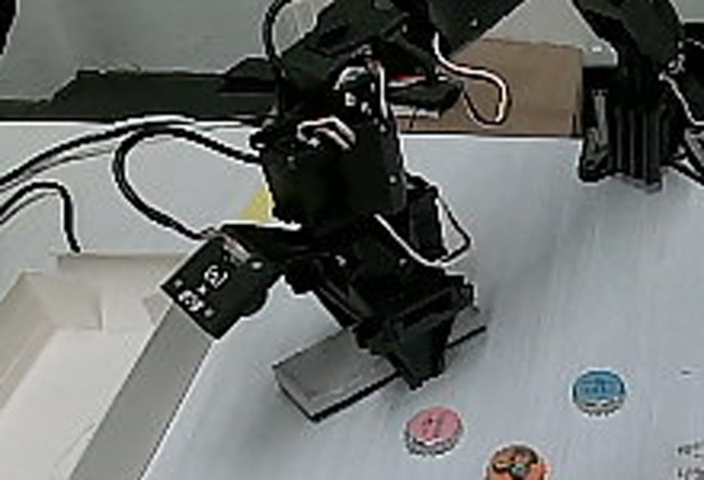
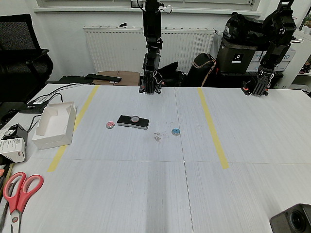
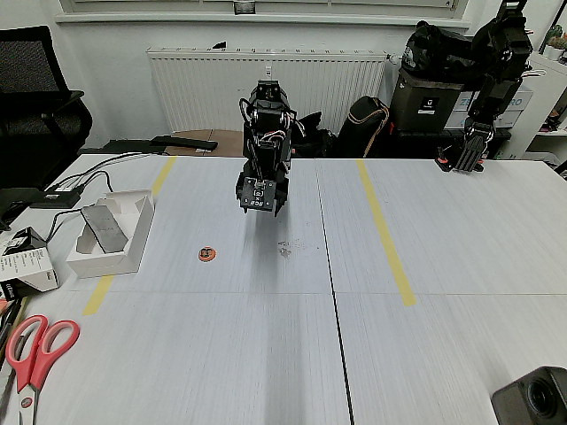

Honest note: only the teleoperation demos and one early failed attempt were filmed. The autonomous pen runs, the duster-and-caps run and the brick stacking were documented with photos and logs (no video) - the photos are the evidence. A video of a full autonomous run can be recorded with scripts/record_run.py.
Real arm - FILMED autonomous runs
duster magnet caps into box 20261122 005058 43 s
Live caption = the run's own log. Last line: [ 83.7s] DONE - picture run/duster_result.jpgduster magnet caps into box 20261122 005058 nocaption 43 s
Live caption = the run's own log. Last line: duster magnet caps into box 20261122 005616 49 s
Live caption = the run's own log. Last line: [ 51.6s] DONE - picture run/duster_result.jpgduster magnet caps into box 20261122 005616 nocaption 39 s
Live caption = the run's own log. Last line: duster magnet caps into box 20261122 010008 109 s
Live caption = the run's own log. Last line: [103.5s] caps still on the table before the bin: 0duster magnet caps into box 20261122 010008 nocaption 104 s
Live caption = the run's own log. Last line: scissors hand taught orientation and cut 20261122 040436 144 s
Live caption = the run's own log. Last line: [ 42.8s] DONE - hand demo recordedscissors hand taught orientation and cut 20261122 040436 nocaption 144 s
Live caption = the run's own log. Last line: scissors hand taught orientation and cut 20261122 041024 37 s
Live caption = the run's own log. Last line: [ 42.8s] DONE - hand demo recordedscissors hand taught orientation and cut 20261122 041024 nocaption 36 s
Live caption = the run's own log. Last line: scissors hand taught orientation and cut 20261122 044117 90 s
Live caption = the run's own log. Last line: [ 95.2s] DONE - hand demo recordedscissors hand taught orientation and cut 20261122 044117 nocaption 81 s
Live caption = the run's own log. Last line: tempo auto attempts full task 20261122 025718 55 s
Live caption = the run's own log. Last line: [ 51.1s] tissue attempt 3: pinch the tip at z 0.08tempo auto attempts full task 20261122 025718 nocaption 58 s
Live caption = the run's own log. Last line: tempo auto attempts full task 20261122 030145 34 s
Live caption = the run's own log. Last line: [ 30.3s] tissue attempt 1: pinch the tip at z 0.092tempo auto attempts full task 20261122 030145 nocaption 37 s
Live caption = the run's own log. Last line: tempo fast full task 20261122 025324 26 s
Live caption = the run's own log. Last line: [ 27.1s] STOP: lane: IK cannot reach (err 5.1 cm)tempo fast full task 20261122 025324 nocaption 30 s
Live caption = the run's own log. Last line: tempo final autonomous run 20261122 031718 60 s
Live caption = the run's own log. Last line: [ 76.0s] lane y 0.268 swepttempo final autonomous run 20261122 031718 nocaption 60 s
Live caption = the run's own log. Last line: tempo final autonomous run 20261122 032056 15 s
Live caption = the run's own log. Last line: [ 33.5s] DONE - no bean cluster detectedtempo final autonomous run 20261122 032056 nocaption 18 s
Live caption = the run's own log. Last line: tempo final autonomous run 20261122 032412 54 s
Live caption = the run's own log. Last line: [ 70.2s] DONE - no bean cluster detectedtempo final autonomous run 20261122 032412 nocaption 57 s
Live caption = the run's own log. Last line: tempo guided session 20261122 030809 224 s
Live caption = the run's own log. Last line: [223.2s] DONE - guided session recordedtempo guided session 20261122 030809 nocaption 224 s
Live caption = the run's own log. Last line: tempo guided session 20261122 033354 4 s
Live caption = the run's own log. Last line: [ 3.9s] DONE - guided session recordedtempo guided session 20261122 033354 nocaption 8 s
Live caption = the run's own log. Last line: tempo guided session 20261122 033615 42 s
Live caption = the run's own log. Last line: [ 42.9s] DONE - guided session recordedtempo guided session 20261122 033615 nocaption 47 s
Live caption = the run's own log. Last line: tempo guided session 20261122 034541 4 s
Live caption = the run's own log. Last line: [ 3.9s] DONE - guided session recordedtempo guided session 20261122 034541 nocaption 8 s
Live caption = the run's own log. Last line: tempo guided session 20261122 034731 27 s
Live caption = the run's own log. Last line: [ 27.6s] DONE - guided session recordedtempo guided session 20261122 034731 nocaption 31 s
Live caption = the run's own log. Last line: tempo guided session 20261122 042606 396 s
Live caption = the run's own log. Last line: [ 0.0s] RECORDING - guided by the human; moves are executed from chat (touch run/STOP_GUIDED to finish)tempo guided session 20261122 042606 nocaption 396 s
Live caption = the run's own log. Last line: tempo guided session 20261122 045101 396 s
Live caption = the run's own log. Last line: [398.8s] DONE - guided session recordedtempo guided session 20261122 045101 nocaption 396 s
Live caption = the run's own log. Last line: tempo open and pull autonomous 20261122 020404 nocaption 0 s
Live caption = the run's own log. Last line: tempo open and pull autonomous 20261122 020404 raw 0 s
Live caption = the run's own log. Last line: tempo open and pull autonomous 20261122 020732 100 s
Live caption = the run's own log. Last line: [ 98.0s] DONE - the cap would not open after 3 attemptstempo open and pull autonomous 20261122 020732 nocaption 100 s
Live caption = the run's own log. Last line: tempo open and pull autonomous 20261122 021208 34 s
Live caption = the run's own log. Last line: [ 21.1s] cap attempt 2: sweep from the top at z 0.076tempo open and pull autonomous 20261122 021208 nocaption 38 s
Live caption = the run's own log. Last line: tempo open and pull autonomous 20261122 021810 59 s
Live caption = the run's own log. Last line: [ 58.3s] DONE - the cap would not open after 3 attemptstempo open and pull autonomous 20261122 021810 nocaption 61 s
Live caption = the run's own log. Last line: tempo open and pull autonomous 20261122 022202 67 s
Live caption = the run's own log. Last line: [ 50.6s] cap attempt 4: sweep from the top at z 0.074tempo open and pull autonomous 20261122 022202 nocaption 71 s
Live caption = the run's own log. Last line: tempo open lid hand demo 20261122 013433 37 s
Live caption = the run's own log. Last line: [ 78.9s] DONE - hand demo recordedtempo open lid hand demo 20261122 013433 nocaption 41 s
Live caption = the run's own log. Last line: tempo open lid push 20261122 012717 22 s
Live caption = the run's own log. Last line: [ 56.0s] DONE - photos run/tempo_*.jpgtempo open lid push 20261122 012717 nocaption 25 s
Live caption = the run's own log. Last line: tempo open lid push 20261122 013002 15 s
Live caption = the run's own log. Last line: [ 16.7s] DONE - photos run/tempo_*.jpgtempo open lid push 20261122 013002 nocaption 19 s
Live caption = the run's own log. Last line: tempo open lid push 20261122 020550 24 s
Live caption = the run's own log. Last line: [ 25.5s] DONE - photos run/tempo_*.jpgtempo open lid push 20261122 020550 nocaption 28 s
Live caption = the run's own log. Last line: tempo open lid replay 20261122 014807 54 s
Live caption = the run's own log. Last line: [ 53.5s] DONE - replay finished, holding the final posetempo open lid replay 20261122 014807 nocaption 56 s
Live caption = the run's own log. Last line: tempo pinch tissue hand demo 20261122 013839 74 s
Live caption = the run's own log. Last line: [103.9s] DONE - hand demo recordedtempo pinch tissue hand demo 20261122 013839 nocaption 78 s
Live caption = the run's own log. Last line: tempo pull tissue 20261122 015349 26 s
Live caption = the run's own log. Last line: [224.4s] DONE - tissue pulled (check run/tempo_pull_4_pulled.jpg)tempo pull tissue 20261122 015349 nocaption 30 s
Live caption = the run's own log. Last line: tempo pull tissue 20261122 015914 61 s
Live caption = the run's own log. Last line: [ 60.7s] DONE - no clean tissue grip after all triestempo pull tissue 20261122 015914 nocaption 64 s
Live caption = the run's own log. Last line: tempo wipe beans with tissue 20261122 023403 8 s
Live caption = the run's own log. Last line: [ 7.6s] DONE - wipe finished, check run/wipe_*_after.jpgtempo wipe beans with tissue 20261122 023403 nocaption 11 s
Live caption = the run's own log. Last line: tempo wipe beans with tissue 20261122 023638 13 s
Live caption = the run's own log. Last line: [ 13.0s] DONE - wipe finished, check run/wipe_*_after.jpgtempo wipe beans with tissue 20261122 023638 nocaption 17 s
Live caption = the run's own log. Last line: tempo wipe beans with tissue 20261122 023920 0 s
Live caption = the run's own log. Last line: tempo wipe beans with tissue 20261122 023920 nocaption 22 s
Live caption = the run's own log. Last line: tempo wipe beans with tissue 20261122 023947 32 s
Live caption = the run's own log. Last line: [ 32.1s] DONE - L sweeps finished, check run/wipe_*_after.jpgtempo wipe beans with tissue 20261122 023947 nocaption 36 s
Live caption = the run's own log. Last line: tempo wipe beans with tissue 20261122 024526 34 s
Live caption = the run's own log. Last line: [ 56.0s] DONE - vacuum-pattern sweep finished, check run/wipe_final.jpgtempo wipe beans with tissue 20261122 024526 nocaption 37 s
Live caption = the run's own log. Last line: tempo wipe beans with tissue 20261122 024824 nocaption 0 s
Live caption = the run's own log. Last line: tempo wipe beans with tissue 20261122 024845 15 s
Live caption = the run's own log. Last line: [ 14.8s] DONE - vacuum-pattern sweep finished, check run/wipe_final.jpgtempo wipe beans with tissue 20261122 024845 nocaption 19 s
Live caption = the run's own log. Last line:
Real arm - teleoperation demonstrations (leader arm drives the follower)
Demo take 2 - SUCCESS 76 s
A person moves the leader arm: marker picked up and placed in the white box. Used as the good training episode (LeRobot episode 0).Demo take 1 - FAILURE (placed wrongly) 132 s
Same task, placed wrongly. Kept as a labelled failure example, not for training as a success (episode 1).
Real arm - an early autonomous attempt that went wrong
First autonomous marker run - the arm pushed the box 52 s
The table mapping had x mirrored; the alignment loop moved the wrong way and the jaws pushed the white box. Found, explained and fixed the same evening (see results notes).
Simulation (MuJoCo twin built by the other agent)
Simulation - successful pick 18 s
From the 100-trial MuJoCo benchmark.Simulation - balance demo 3 s
Another simulation experiment in the repo.
Real arm - autonomous pen / marker into the white box (about 23 s from seeing the pen)
Real arm - magnetic duster collects metal bottle caps and goes into the box
 Setup: duster with a magnet in its centre, three metal caps, the white box.
Setup: duster with a magnet in its centre, three metal caps, the white box. Colour/shape detection of the duster (green) and caps (magenta).
Colour/shape detection of the duster (green) and caps (magenta).
Diagnosis photo: the wrist-camera board rests on the old, thicker duster, so the jaws only caught its edge.
An earlier run: the duster slipped out on a fast move and landed upside down with a cap stuck on it.
Earlier run: duster in the box, one cap still on the table. FINAL RUN: duster grasped first try, held over both caps (no pressing), camera check, then into the box. Both caps are gone from the table (on the magnet underneath).
FINAL RUN: duster grasped first try, held over both caps (no pressing), camera check, then into the box. Both caps are gone from the table (on the magnet underneath).Real arm - LEGO / Duplo: put the red brick on top of the yellow one (not finished)
Data for training
LeRobot dataset v3.0 (datasets/elrobot_teleop, kept on disk, not in git): 2 episodes, 6445 frames at 30 fps. state = follower joints, action = leader joints, one table camera (640x480). Episode 0 = success, episode 1 = labelled failure - train on the success only. Source video was 8 fps (frames repeated to 30 fps).